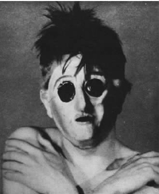
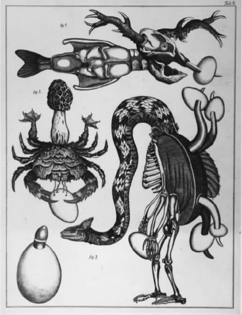
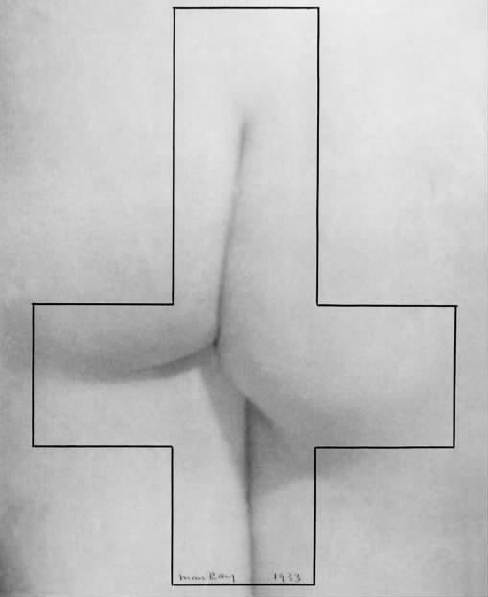

“伙计：人怎么可能希望命令无穷无尽、无形无状、变来变去的混乱呢？”特里斯坦·查拉在1918年的达达宣言里这样问道。相比之下，布勒东在他的超现实主义小说《娜嘉》的开始部分提出了一个更富希望但本质上仍令人困惑的问题：“我是谁？”对身份的质疑、对意识本性的质疑，或是对灵肉关系的质疑构成了达达主义和超现实主义的基础，同时也是这二者产生分歧的基础。接下来我将考察一下这些问题是如何与他们的写作和艺术相互联系的，又是如何重点关注相关的理论家和艺术家之间发生的更为有趣的争论的。如果说这两种运动都赞成非理性要比理性重要，那么它们到底是怎样设想非理性的呢？如果说它们追求的是非理性主义，那么这种非理性主义又是怎样触犯了传统的人文主义价值观？这种反人文主义计划又在多大程度上是可取的？达达和超现实主义都反对传统宗教，主要是因为许多追随者接受的是沉闷的说教式教育，但是，它们怎能削弱西方思想中普遍存在的灵肉二元论呢？
正如我们将看到的那样，它们选择利用各种通常与神秘主义或是炼金术思想相联系的哲学体系和信仰模式。它们反对犹太教和基督教对肉体的质疑，受到放纵肉体和性欲观点的吸引。这些观点都不可避免地背上了意识形态的包袱，在下文的讨论中这将作为一个问题出现。
特里斯坦·查拉在1918年的达达宣言中宣称：“逻辑总是错的。它将概念和字词肤浅地引向虚假的结论和中心。”查拉深信任何全局性的思想体系本质上都是偏颇的，他像大多数达达主义者一样宁愿选择彻底的相对主义立场：
这种相对主义部分受到了德国哲学家尼采思想的影响，尼采几乎影响了所有重要的达达理论家。他认为人性受到了非理性和自负冲动的控制，他的这种感觉成为达达理论家常见的参照标准。同样对他们施加影响的还有法国哲学家亨利·柏格森的思想。他在《创造性进化论》（1907年）一类的书中强调，直觉在理解现实本性时是至高无上的。达达主义者所普遍热衷的另一个人是法国诗人兰波，他在其1871年的诗作《看得见的字母》中大肆鼓吹“一种长久的、系统性的所有感官的失常”，其目的是将现代诗人塑造成一个“先知”。
除了这些名誉上的领袖之外，理清德国和法国达达主义在非理性学说的起源方面存在的区别对于我们来说也是很有帮助的。尼采和柏格森的思想体系提供了一种总体上的心理学方向。但是20世纪初叶的弗洛伊德精神分析法坚定地断言，人类动机的基础是非理性的。它强调人类心理内在的分裂特性，发现了性欲在人类发展过程中的重要影响。德国达达团体的成员肯定在早先就读过弗洛伊德的作品（《梦的解析》最初于1900年在德国出版），但是正如上文已经提及的那样，他们大都对弗洛伊德精神分析法的“资产阶级”基调持怀疑态度，感觉他的治疗目的是使人适应个人在社会中的位置。身在科隆的马克斯·恩斯特是对这一想法持不同意见的一个主要人物，但柏林的达达主义者却更加同情奥图·葛罗斯那样的左倾的“反弗洛伊德的弗洛伊德式”作家。正如理查德·谢泼德所指出的那样，葛罗斯对于被高估的理性主义及人性中非理性部分的危险压抑的心理批评更能被面对日常街头暴力的柏林人所接受。这也有助于人们在德国左翼内部关系破裂时集中力量去反对左翼表现主义作家如路德维希·鲁宾纳等人支持的日渐衰微的精神讨论。出于同样的道理，弗洛伊德的同事阿尔弗雷德·阿德勒的理论对于那些坚持认为“人性中毁灭性的冲动和肯定性的冲动并存”的柏林达达主义者来说更为适合。阿尔弗雷德·阿德勒认为，人类受到尼采“权力意志”的刺激，并认为让人揣摩不透的现代问题的本质是对男性主义的过高估计。
相比之下，巴黎的气氛对于正统的弗洛伊德精神分析法来说更为有利。我已经谈到过巴黎达达主义者对弗洛伊德精神分析法的接受，证实了布勒东已经将弗洛伊德的理论引入他的医学培训（路易·阿拉贡其实也以同样的方式开始），并且确认了弗洛伊德在《第一次超现实主义宣言》中象征性的主导地位。同尼采相比，弗洛伊德对布勒东的吸引力要更大一些，尤其是因为，随着20世纪20年代的发展，尼采所强调的个性化的“权力意志”已经与布勒东对马克思主义的日渐执著格格不入了。但是我们不应过分强调弗洛伊德在早期超现实主义中的重要性。布勒东主要是通过法国心理学家埃马纽埃尔·雷吉斯和安杰洛·赫斯纳德的说明性文摘来了解弗洛伊德的，而且他更为精通法国神经学家约瑟夫·巴宾斯基等人的理论。弗洛伊德的著作是逐渐被翻译成法语的，例如《日常生活中的精神病理学》是1922年最早一批在法国出版的作品中的一本。一个醒目的事件是同一年恩斯特加盟超现实主义，这一事件成为深入了解弗洛伊德病例研究细节的催化剂。恩斯特早在1911年间就读波恩大学时，阅读了弗洛伊德的理论，当时心理学是他的学位课程。1922年至1923年期间，作为一名超现实主义者，他即将运用这一知识创作好几幅重要的绘画作品。其中，《圣母怜子/夜之革命》（图4）通过可以相互替代的标题，将超现实主义的革命主题附加到了弗洛伊德理论对梦境的强调之上。
但是为什么要用“圣母怜子”这个典故呢？在传统的基督教圣像学中，“圣母怜子”描绘的是童贞女马利亚怀抱死去的基督。在这里我们看到的却是一幅同传统截然相反的“圣母怜子”，画中一位父亲而非母亲怀抱着自己的儿子。从多种迹象来看，尤其是他的胡子，我们可以认出这位“父亲”其实就是恩斯特的父亲菲利普。菲利普是一位特别虔诚的天主教教士，同时也是一位业余画家。当恩斯特还是孩子时，菲利普有一次就曾经把他的儿子画成婴儿耶稣。由此我们也可以认为画中他怀抱的那个人其实代表了马克斯·恩斯特/基督。与“圣母怜子”相反，菲利普的形象因此也会亵渎神明地唤起人们对上帝的联想。儿子已被吓呆了，因为他的手和脸被涂成灰色，这个暗示实则说明这位父亲已经将他的儿子变成了石头。
所有这一切都强烈地暗示着恩斯特采用了弗洛伊德的“梦之作品”中的一些基本构造，尤其是展示了“错置”和“浓缩”的过程。在这个过程中，梦者受压抑的欲望和焦虑被编织在梦的“展示内容”之中。通过这种方法他为自己撰写了一部奇异的心理传记，把传记元素和基督教圣像学艰难地拼凑在一起。他的总体参照点似乎是弗洛伊德有关童年性行为和俄狄浦斯情结的论述，而它们却是以男童的无意识幻想为基础的：他与自己的父亲争夺母亲的爱，结果受到粗暴的（阉割）严惩。这幅画的“潜在内容”因此就变成父亲因儿子触犯了乱伦禁忌而对其加以惩罚。当然，恩斯特并非重建自己的梦而是在创造一种自我分析。
但是让我们留神，不要仓促地就对恩斯特的画作出有限的阐释。我们很容易把这幅《圣母怜子》看成是在表达对父亲怀有一种原始同性恋依附的“倒置的俄狄浦斯情结”。在恩斯特同一时期创作的其他作品如《对这个男人我们应一无所知》中，他则将一些只有内行才懂的参照点如炼金术同心理分析相对应。尽管艺术史学家试图认为弗洛伊德的“不可思议的”主题遍布超现实主义之中，但恩斯特之类的艺术家对弗洛伊德精神分析法的态度也许比这些热心的阐释纲要所暗示的更富有讽刺意味。恩斯特对弗洛伊德精神分析法的理解肯定为其他超现实主义者提供了先例，但是也许除了达利之外，他们很少循规蹈矩地看待弗洛伊德精神分析法。比如，1930年这位心理学家的著作《玩笑及其与无意识的关系》被翻译成法文，这也许同当时超现实主义者对黑色幽默的迷恋相一致。但1928年路易·阿拉贡就已经公开嘲讽弗洛伊德在法国走俏一事，在《论风格》中他声称19世纪的感伤主义小说《保罗和弗吉尼亚》“如今可以被视为令人惊奇的新作，只要弗吉尼亚能对香蕉稍作评论，保罗又不时茫然地拔出一颗臼齿。”相应地，弗洛伊德也对超现实主义报有怀疑的态度。1937年布勒东邀请弗洛伊德为一部记述梦境的文集供稿却被弗洛伊德回绝了，因为后者认为记录下没有与病人建立关系的梦境是毫无意义的。超现实主义者对诗意的兴趣使其远离了对实际心理分析的关注。
另一个更为宽泛的问题是在超现实主义者中无意识所占的总体地位。总的来说，它是怎么定义人性的？无意识的观念假设人被一个内在的“他者”所控制。在某种程度上，超现实主义者将这种迷宫似的并且存在潜在冲突的内在自我浪漫化了。他们从严格意义上的浪漫主义传统之中发展出了一种对于疯狂的崇拜。布勒东热衷于收藏精神病艺术家如约瑟夫·克雷潘和赫克托耳·伊波利特等人的作品，1922年恩斯特将汉斯·普林斯宏的《精神病人的艺术技巧》作为礼物送给了他的朋友保罗·艾吕雅，这一出名举动再一次刺激了视觉超现实主义。1930年，布勒东和艾吕雅在合作撰写的《着魔》一书中企图模拟精神错乱的状态。但是关注精神错乱时，超现实主义者对它的处理又是相当糟糕。娜嘉是布勒东第一部小说的灵感来源，当她受制于精神错乱之后，却没有得到多少有效的帮助，而精神错乱的早期“诗意”征兆曾深深地吸引过布勒东。同样，布勒东也曾经被安托南·阿尔托的事弄得心力交瘁。身为煽动诗人以及随后的“残酷戏剧”的理论家，安托南·阿尔托在1925年曾经短暂掌管过短命的“超现实主义研究局”，但最终由于他同布勒东对革命概念的理解分歧太大，两人闹翻。对于布勒东来说，革命本质上是精神层面的态度，但对阿尔托而言，革命需要发自肺腑地屈从于非理性。当阿尔托最终真的疯了的时候，布勒东没有给予他多少帮助。
如果说上述事例证明了超现实主义者在真正陷入无意识的危险境地时言行不一，那么他们与无意识的理论联系则意味着他们有意对资产阶级传统（特别是性欲方面的传统）进行剖析。接下来我们所关心的是，他们在这么做的过程中究竟在多大程度上可以克服自己的资产阶级构想。但是我们有可能不得不认同达达主义者的观点，他们声称对一种社会类型的适应最终构成了布勒东理解无意识的基础。作为日常存在不充足的辩证对应物而出现的满足欲望的节点，无意识对布勒东而言是获得一种性质不同、形态改变的生活经历的途径。同时布勒东又感到日常生活应该按照一种马克思主义的模式来加以改造。在许多达达主义者看来，布勒东认为有意识和无意识之间存在一种新的辩证契约，这一信念是以一种可疑的人文主义为基础的。相比之下，达达主义者则提倡反人文主义的观点。
柏林和纽约达达的一个中心主题就是“人即机器”。由于感到人类已不可更改地将自己的命运扔进了机械化，这两个城市的达达主义艺术家逐渐形成了一种非常精细的肖像画法——“机械生成论”，即人和机器的混合体。1920年5月，乔治·格罗兹在柏林创作了《多姆1920年5月嫁给了书呆子机器人“乔治”。约翰·哈特菲尔德对此很高兴》（图13）来影射他自己新近的婚姻。在画中他将新婚妻子多姆（戏仿她的绰号姆德）画在左边，而他自己则像一个机器人一样站在右边。在维兰德·赫茨菲尔德看来，格罗兹的画抨击了资产阶级体制中的婚姻状况。维兰德·赫茨菲尔德认为，婚姻“永不停息地把男人变成了它的组成部分，成为一个庞大的车轮和传动装置中的一个小齿轮，因此当妇女在一定程度上获得自由时，男人却‘陷入了其他严肃、迂腐且工于心计的任务之中’”。这一论断也许掺入了些许厌恶女性的色彩，但它却揭示了这一观点：达达主义者认为机械化已是四处蔓延。有趣的是，婚姻图像学在达达中十分盛行。1919年，另一位柏林达达主义艺术家汉娜·赫希创作了一幅关于这一主题的女性场景，描绘了一对被束缚在现代精巧机械之中的夫妇（图18）。此时身在纽约的马塞尔·杜尚正辛勤工作，试图通过《甚至，新娘也被她的男人剥得精光》这幅画为“人与机器”作一陈述。正如前文所说的那样，在玻璃上的这幅复杂作品中，漂浮在上方的一位“新娘”与身下那群地面之上的“单身汉”形成对照。新娘和她的配偶们都被描画成机器。正如赫茨菲尔德对格罗兹的画作出的解释一样，新娘保留一定的自主权，而单身汉们却被视为自淫的躯壳。
此处无论有多少关于婚姻的不同态度，但有一点是清晰无误的，那就是浪漫的爱情，特别是在杜尚的作品中，它已经沦为机械式的操作了。人类的身体被假定为是同灵魂或思维没有任何自然联系的机器。在某些方面，我们甚至可以看见潜伏在这些思想后面的法国哲学家笛卡尔的影子。构成现代科学方法基本哲学前提的笛卡尔的二元论声称，思维作为一种思考的物质是脱离身体而存在的，就像拉美特利等人所认为的那样，身体纯粹是一种机械装置。尽管达达主义者带有极度的嘲讽，但我们可以认为他们是支持笛卡尔的观点的。例如杜尚的纽约达达主义的盟友弗朗西斯·皮卡比亚就针对“性欲”创作了一些极端冷嘲热讽的作品，他在1915年创作的《裸体状态的年轻美国女郎肖像》（图11）中就将女性的性能力和一只运转的火花塞相提并论。
皮卡比亚在这一时期创作的大部分作品基本上都表现了反人文主义对精神性和深层内在情感的怀疑。在某种程度上柏林达达主义者分享了他的观点。比如劳乌尔·豪斯曼就宣称：“达达绝对缺少那些所谓的精神的东西，在一个机械化运行的世界里为什么要有精神呢？”但重要的是，我们应当认识到，表现主义者关于现代人的灵魂同机械之间的冲突的言谈成为了豪斯曼批评的笑柄。实际上，柏林的达达主义者对机械所持有的态度总的来说比起纽约的达达主义者要积极得多。他们认为一种机械式的审美观可以成为削弱个人主义、宣扬集体性的一种方式。他们借助富有活力的唯物主义，设法避开了人文主义的陈词滥调，但是也许除了格罗兹之外，他们根本不赞同纽约达达主义者（无论有多么讽刺）所认同的灵肉二元论。如我们后来所见的那样，苏黎世和柏林的德语达达主义者更多倾向于一种带有神秘色彩的一元论哲学观，其中肉体和精神的双重性被整合为矛盾的统一体。在这一方面，若不是布勒东的观点充满了唯心主义色彩，他们本来是赞同布勒东的超现实主义观点的。但是“唯心主义”在这里究竟意味着什么？让我们再回到超现实主义。
1929年布勒东在《第二次超现实主义宣言》中曾出名地宣称：“所有的事情都企图使我们相信在我们的思维中的确存在某一点，从这一点出发我们将发现生和死、现实和想象、过去和将来……都不再被视作是矛盾的了。”这段引文可以部分地帮助我们在超验主义的基础上理解“超现实主义”中“超”的含义所在。但最有趣的是，它表明了布勒东对黑格尔辩证法的完全信奉。布勒东在1912年左右开始接触这位19世纪早期德国哲学家的思想，后来他承认自己在很大程度上是通过直觉理解了黑格尔的思想。从根本上说，布勒东是利用黑格尔使自己早年对无意识探索的强调同1926年以后他自己以及整个超现实主义对共产主义的信仰协调起来。黑格尔思想的唯心主义倾向对布勒东来说是至关重要的。在黑格尔深奥抽象的哲学思想中，思维或是精神通过一系列不断发展的辩证统一体来认识自身。对于布勒东来说，超现实主义的意象也经过类似的运作，通过矛盾之间的冲突而产生一个新的“更高”的统一体。
布勒东在论及精神和物质的辩证关系时，提倡精神的自我实现，因此更像是一个唯心主义者。但是这是否也表明，许多达达主义者反对的其实是一种隐蔽的自由人文主义呢？这一问题的答案并非来自达达主义者，而是来自布勒东最敏锐、最理智的对手乔治·巴塔耶。
正如上文所述，巴塔耶从来都不是超现实主义的一分子，但却是它的对话者和鞭策者。当布勒东在1929年将这一组织的不同成员——特别是米歇尔·莱里斯、安德烈·马松和罗贝尔·德斯诺斯等人驱逐出去之后，他们中的好几个人随即转投巴塔耶，成为他创办的杂志《文献》的拥趸。在很多方面，于1929年至1930年间发行的《文献》与超现实主义杂志相类似，都有一个“科学”光环，但是《文献》上刊登的准理论性文章更加关注人类文化学和考古学等方面的问题，中和了爵士乐以及流行文化其他方面的议题。尤为重要的是，考虑到与我们目前讨论的议题的相关性，我们发现连篇累牍的文章，特别是巴塔耶的文章抨击了布勒东思想中的唯心主义假设。有时这些评论并不直接而是多以讽喻的方式出现。在那篇被多次引用的散文《大脚趾》中，布勒东将大脚趾说成是人的体格特征之一，是它使得人类得以同类人猿区分开来。同样也是它使得人类可以直立起来，将心思集中在更高处的事情上。但巴塔耶却辩称，人们认为“陷在烂泥里”的大脚趾是一个基本的而且可被忽视的东西，他坚称只有恋物癖者才会重视脚。因此，巴塔耶追求一种价值的彻底转变。这种颠倒在其他写作中将号召人们起来庆祝人性中基础的或排泄的方面，以此来反对唯心主义的逃避。
尽管布勒东在《第一次超现实主义宣言》中宣称废黜传统道义，但是巴塔耶依然认为布勒东的超现实主义设想受到了“品位”和美感的束缚。在1930年第二期《文献》上发表的《本性的背离》一文中，巴塔耶详述了人类对于自然畸形如连体双胎的迷恋。这篇文章其实可以视作是对人文主义者提倡的两性体象征的间接批评。男性和女性合一之类的事在魔法寓言中经常出现。正如我们即将看到的，布勒东式的超现实主义者对此尤为着迷。但巴塔耶还是间接将两性体视作再次影射了唯物主义和唯心主义的合一。巴塔耶总是念念不忘自然发生的事情，认为两个人的连结所产生的不是理想的结果，而是怪胎。我们发现关于怪胎的玩笑贯穿《文献》的始终，这些玩笑用直截了当的物质性来反对唯心论。例如，乔治·林布发表了一篇关于面具的文章，坚称唯一能与大洋洲部落面具所拥有的仪式影响力相媲美的西方对等物是类似煤气罩那样的物件。在为这篇文章所配的插图中，《文献》刊登了一系列由J.-A.博依法德拍摄的著名的狂欢节面具照片。大概是为了让人们联想到欢快，其中一幅照片上的人乍看起来好像已经把眼睛烧穿了。
1929年，布勒东和巴塔耶之间爆发了一场直接冲突，其时布勒东授意当时的超现实主义新兵萨尔瓦多·达利拒绝让巴塔耶在《文献》上翻印他当年的重要画作《悲伤的游戏》，画的旁边还附上了巴塔耶为《文献》撰写的注释。巴塔耶很满意这幅画的示意图，但是在他的注释里，他却总是专注于达利的绘画中所传达出的对手淫和阉割的焦虑感，就达利自己公开宣称过的对交媾中断、粪便学和腐烂的着迷程度，揭示出达利是典型的巴塔耶式的艺术家。布勒东似乎对达利作品中真正“痉挛”的方面视而不见，但同一时期他在反对安托南·阿尔托不纯的超现实主义本性时却并不迟缓。虽然巴塔耶理所当然地声称达利归属于自己的团体，但达利在那段时间还是留在了布勒东阵营里。

图24 J.-A.博依法德，《狂欢节面具》，刊登在《文献》第二期上的照片（巴黎，1930年）。
其他艺术家则基本明确地选择了背离布勒东，其中一位是安德烈·马松，他更倾向于尼采思想和暴力意象，例如在他1933年的画作《大屠杀》中，男人正在对女性进行大屠杀。这些对布勒东而言就太过分了。
巴塔耶对布勒东的反人文主义批判看起来好像同达达对超现实主义“教皇”的批评一致，但巴塔耶同达达的立场却并不相同。与他早年冲动的20世纪20年代相比，巴塔耶在以后的岁月中显得更加接近超现实主义。这主要是因为他公开支持超现实主义的总体见解，认为现代人的困境部分源自缺乏神话或“神圣的”东西，以应对人性中黑暗的、无法无天的冲动。随着1939年战争的到来，当达达和超现实主义由于介于两次世界大战之间而被人们回顾时，对于它们的智识继承者而言，解构人文主义的“人”就变得尤为迫切。巴塔耶的思想被米歇尔·福柯之类的法国后结构主义思想家所继承。但是巴塔耶本人的反人文主义也未能给出解决的办法。这甚至促使他在20世纪30年代的某一阶段开始接近法西斯主义。达达和超现实主义企图绕开人文主义价值观和灵肉二元论的另一途径是借助于神秘思想或炼金术。
“在上帝创造世界之前，达达 盘旋于水面之上，当上帝说：让这儿有光！哈，这儿并没有光，只有达达 。”柏林达达小组成员的这一联合声明反映了他们对于传统宗教的诙谐态度。我们已经讨论过超现实主义者恶毒的反天主教的例子了。像达达主义者一样，超现实主义者最痛恨的还是犹太教和基督教的灵肉二元论。正如我们所看到的，尽管杜尚和皮卡比亚用二元论的语言来讽刺现代人的科技至上论，达达主义者还是格外支持前苏格拉底或非西方的哲学原理。在这些哲学理论中，精神与物质是均衡发展的。这是对现代心灵更大规模的批评的一部分。
达达主义者利用的资料来源多样，各不相同。苏黎世的雨果·巴尔特别钟情希腊前苏格拉底思想家赫拉克利特所强调的世上万物都在永恒的流动之中，而汉斯·阿尔普却更喜欢17世纪的德国作家雅各布·伯麦所代表的基督教神秘主义以及中国的道家哲学家如老子。我们知道汉斯·阿尔普在1917年苏黎世的一次达达晚会上曾经朗读了伯麦的一段文章，意味深长地选择了一些强调“在不断的演变中保持平衡的重要性”的段落。在中国的影响方面，汉斯·阿尔普有可能将古老的先秦道家关于变化的理论（如《易经》）加以变形来创作他自己的拼贴，在这幅作品中，长方形的纸片“按照机会定律”被排列（图15）。《易经》对道家思想有过重要影响，旨在预测在自然界，甚或人类社会中发挥作用的变化模式以及由此衍生出来的在人类世界中发挥作用的变化模式。当对话人考虑这种模式时，他通过投掷一些蓍草棒（现在可能是用硬币了）来让自己服从机会的摆布。这些掷出的蓍草棒会形成一系列抽象的“六边形图案”，然后他将这些图案同《易经》中晦涩难懂的某一句卦辞相对应。虽然很明显阿尔普不是在占卜，但是他在投下那些长方形纸片时，也同样是让自己服从于自然的规律而非人类的法则。
身在柏林的劳乌尔·豪斯曼在1918年前后好像也在读老子的书，此外他还对德国达尔文主义生物学家恩斯特·海克尔的理论颇感兴趣。恩斯特·海克尔察觉到一个单一的原则，即“物质定律”，并用它来统一物质与精神。所有这一切都证明了历史学家理查德·谢泼德的信念，即达达主义者的非理性主义和反艺术的偶像主义就其根本而言都来自深层次的哲学需求。达达中的一派（主要是苏黎世，当然也包括豪斯曼等非共产主义的柏林艺术家）旨在发现混乱无序的自然模式与它的内在模式之间的交互作用。另一派以纽约的杜尚、巴黎的皮卡比亚和柏林的乔治·格罗兹、瓦尔特·塞纳为代表，在本质上更多关涉存在，而且更倾向于虚无主义。这当然与大多数人的看法相一致：与巴黎和纽约的达达相比，苏黎世的达达从本质上而言更具“建设性”。
当我们转向超现实主义时，我们很少发现阿尔普或是豪斯曼所热衷的自然神秘主义，尤其是因为表现主义虽然在很大程度上引导了他们的兴趣，却对法国运动的影响很小。超现实主义的反二元论更多源自中世纪及后中世纪的西方炼金术传统。炼金术几乎是这场运动中所有主要作家和理论家的兴趣所在。其中混杂着占星术和四大元素，时常出现在视觉超现实主义之中。从根本上来说，炼金术关注的是物质转变，因此我们在马松等人的作品中感受到了多重意象。在他的作品《鸟的诞生》（图16）中，鸟从一个女性阴户中飞出的意象同炼金器皿的花纹中出现的上下翻飞的象征性的鸟儿之间存在着直接的联系。器皿是物质实现转变的地方，而整幅画就采用了隐喻形象来表现出生这一主题。马松可能在不经意间比其他超现实主义者更接近阿尔普的自然神秘主义，并且马松还深受赫拉克利特的影响。但是在米罗的作品（图19）中，我们同样也可以发现对丰富的、有神秘样式的宇宙的影射。这和13世纪的基督教神秘主义者拉蒙·鲁尔的哲学观相一致，他和米罗一样都来自加泰罗尼亚地区。
重要的是，我们要强调对超现实主义而言，炼金术使人联想起的是中世纪后期某一特定的世界观，而不是常见的想象中的许多神秘之事。一般来说，超现实主义者对超自然的事情，特别是19世纪红极一时的一些学说（如唯心论）兴趣不大。布勒东竭力指出，超现实主义者在“朦胧运动”期间所经历的恍惚与同死者的交流无关。超现实主义的最佳评论家瓦尔特·本雅明强调，超现实主义者感兴趣的是从物质存在而非宗教、“来世”或麻醉药中获取“渎神的启示”，并且我们必须记住，超现实主义者的兴趣经常同马克思主义的思想一致。
尽管如此，我们知道布勒东早年曾经十分迷恋19世纪法国作家埃利法斯·莱维的魔术思想，尽管莱维本人是一位唯物主义者，并一直致力于物质和精神的调合。这使我们又回到了超现实主义对炼金术的理解上来。一方面，这一派受到十足古怪且古老神秘的雕版画的吸引，这些雕版画寓言般地揭示了炼金术物理变化过程中被注入的精神元素。马克斯·恩斯特于20世纪20年代后期至30年代早期为“拼贴小说”创作的那些插图就从上述先驱中受益匪浅。另一方面，超现实主义者赞同心理分析学家卡尔·荣格在其1944年的著作《心理学与炼金术》中对炼金术所作的精妙解释。荣格在书中争辩说，虽然基督教强调从原罪中获得救赎，但这却暗示了对肉体的怀疑，神秘主义者却将炼金术寓言用作评论基督教的一种方式，强调精神和物质的调和可以通过男性本质和女性本质在两性体中的结合来实现。所有这一切都清晰地与超现实主义者对天主教教义的全面否定相吻合，而且我们可以毫不吃惊地看到，两性体的形象在超现实主义的艺术和写作中随处可见。但我们也应记得在上一部分谈到过的乔治·巴塔耶的文章，在那篇文章里巴塔耶认为对立面的合一将导致畸形而非调和。这是超现实主义玄奥思想的另一面。
如果说炼金术唤起了一种新的哲学世界观，那么一群重要的超现实主义艺术家就此开始颠覆后启蒙时代的知识分类。在这方面，超现实主义者对16和17世纪“奇珍异宝室”的传统特别感兴趣。这些陈列柜采用类比或异想天开的关联原则先于物种或种属原则的方法，为人造或自然的物品提供了另一种排序或归类模式，这些模式与最终将取代它们的博物馆中的分类模式是截然不同的。超现实主义者在各种各样的情景下，闹着玩似的谈到了可供替代的分类系统。他们倾向于这样来安排自己的艺术藏品，使得达利或德·基里科的绘画经常同一些富于异域色彩的自然物品和“原始”的人造物并列展出。出于同样的原因，达利在1936年创作了《超现实主义物件》，作品由一托盘的物体组合而成，包括一只鞋、几张有图案的馅饼皮，以及上面画有一对夫妇在做爱的小件装饰品，达利根据个人的恋物癖费尽心机地将这些事物组合在一起。后期加入超现实主义的一位经验相当丰富的美国人约瑟夫·康奈尔将其职业生涯全部用来创作那些打开的盒子。通常这些大小不超过18英寸×12英寸的盒子里放着陶制水管、药剂师的罐子和星表之类的东西，唤起了人们对一个微型世界的幻想。
杨·史云梅耶的一个惊人形象可以帮助我们更进一步地了解超现实主义在这一方面的作为。我们在上一章提及的这位捷克斯洛伐克漫画家和电影人实践了一种复杂的后期超现实主义形式。20世纪70年代早期，史云梅耶创作了一大批铜版画——《自然科学》。在动物的插图部分，动物及其骨骼强行结合在一起，变成一些令人反感的混杂物。杨·史云梅耶在这里有意向马克斯·恩斯特表示了敬意，恩斯特曾出版了一整套擦印画《自然历史》。但史云梅耶让恩斯特的遗产焕发了新的活力。史云梅耶还为他那怪异的分类系统作了一些令人吃惊的模拟科学的注解。例如在《含阳式的俄狄浦斯》（图25）中，我们被告知有一种巨大、畸形的澳大利亚动物，雌兽产卵，雄性的幼兽用自己的阳物破壳而出。雌兽接着同它们刚生出的幼兽口交，吞下幼兽的精液从而产下更多的卵，然后它们合上下巴，将幼兽阉割，以确保成年兽群实际上都为“雌性”。
这儿所包含的黑色幽默以及对心理分析一贯的调侃，同超现实主义的主流思想是一致的，但史云梅耶之所以不通情理地弄乱自然数据主要还是同他的身份密切相关。身为艺术家，他继承了捷克斯洛伐克的超现实主义传统。布拉格也许曾经是16世纪晚期最大的“奇珍异宝室”，也就是鲁道夫二世的“奇珍异宝室”。史云梅耶的作品嘲讽地回顾了这种收藏的神奇之处。这反过来又说明一个可替代的知识系统不可避免地带有地域性而非普遍性。它也间接地对超现实主义是以巴黎为中心的假设作出了评注，这一主题与超现实主义关于殖民主义的论述相互呼应。20世纪三四十年代期间，这一论述被用来缓和超现实主义运动的亲法倾向。
尽管超现实主义者表现出了颠覆传统分类的独创性，但是我们也许可以声称他们还是一直遵循西方的知识传统。与之形成对比的是，达达和超现实主义都有回归“原始”的返祖倾向，这一倾向可被视作是针对西方假设的人性而开展的更为直接的斗争。这使我们再次想起巴塔耶思想中的反人文主义倾向。他的兴趣在于反对西方极难同化的唯心主义思维习惯。但这一讨论我们将留到下一章继续进行。由上文所述我们可以明确的是，达达主义者和超现实主义在一定程度上都运用了神秘主义和炼金术的思想模式从内部出发反驳西方的二元论。就像超现实主义时常坚称的那样，他们所追寻的是解放。但是巴塔耶肯定会提出反对意见，认为这种解放只惠及精神或心灵。那么该如何看待身体呢？

图25 杨·史云梅耶，《自然科学》，版画，1973年。
在《罗马书》第7章第21节至24节中，圣保罗在信件里声称：“我觉得有个律，就是我愿意为善的时候，便有恶与我同在……谁能救我脱离这取死的身体呢。”宗教上的这种对身体的贬低使得达达和超现实主义艺术猛烈地“回归到被压抑的事物”。例如1920年3月在巴黎达达发展的早期阶段，弗朗西斯·皮卡比亚在他的杂志《391》上刊登了一幅泼墨画，取名《圣母》。这幅画和阿尔普早期在苏黎世创作的拼贴一样，是表现机会过程的实例。此外，它也很“抽象”，而且这幅达达泼墨画还暗示了渎神的意思。根据天主教的教义，圣母在怀上基督时并没有体验过“性交的快乐”，而是一直保留着童贞之身。皮卡比亚的泼墨画所唤起的并非他物，而是蹂躏处女引发的极度肉感。
这一关于身体体验的禁忌话题的再次出现表明，达达和超现实主义对传统的道德标准持一种唾弃的态度。但所有这一切仅仅只是对父系文化的俄狄浦斯式的抨击，抑或是赋予身体一个新的角色？
我们惊讶地发现，达达很少从感官意义上来看待身体。舞蹈在苏黎世团体的画廊达达表演中发挥着至关重要的作用。匈牙利出生的舞蹈先驱鲁道夫·冯·拉班蔑视经典规则，他通过身体的有机运动在张弛结合的基础上建立了自己的舞蹈风格。他和自己的明星舞伴玛丽·魏格曼设计出无数舞蹈贡献给了达达晚会。正如一位评论家注意到的那样：他尤其精于“优雅的变形”。达达的奠基人之一雨果·巴尔也是新颖的舞蹈形式的热情倡导者，他曾经编写过一首抽象的舞曲《飞鱼和海马之歌》，并于1917年由汉斯·阿尔普的伴侣苏菲·达厄贝在达达画廊进行表演。“这是一首充满闪光、鱼骨和炫目灯光的舞曲……她身体的线条破裂开来，每一个姿势都分解成上百个细致入微、有棱有角、直截了当的动作。”这些革新舞蹈表明，它们意欲让身体摆脱表达习惯的限制，而且就拉班的意识形态而言，它们也同新兴生活方式中的裸体主义和素食主义实验一致。但是从最为严格的意义上讲，这些创新舞蹈的出现并不是由达达的理论推动的。与包括男性达达主义者的“黑人舞蹈”在内的达达表演中其他一些更加尖锐、更为无法无天的方面相比，它们则显得有一点怪异。
除了这些以外，我们发现在乔治·格罗兹等柏林达达主义者的画作（图13）中，身体正遭受城市生活以及战争后果的蹂躏。格罗兹在1917年中期创作的一首诗中反映了他因在军中服役而遭受的精神崩溃。他将自己描绘成“一台压力表都已裂成碎片的机器”。绝大部分的柏林达达主义者都表现了战争引发的无序状态给心理造成的精神创伤，在他们所描绘的人物身体和面部表情上流露出了炮弹休克综合征之类的症状。豪斯曼的语音诗歌甚至被认为是模仿战争中精神官能症患者在恢复语言能力的治疗过程中所发出的结结巴巴的话语。出于同样的原因，杜尚或皮卡比亚笔下的机械化的人则产生了身体的异化。杜尚的《大玻璃》也许要被单独拿出来举例。根据他为作品所写的注释，这些机械化的性参与者正通过汽油和电能活动。杜尚在此设想了一种新型的“生产性”身体机能，尽管这一机能与自然进行了一次挑衅性的对话。
就像达达主义者一样，为了反对战后法国政府重振国家自信的企图，超现实主义者创作了大量伤痕累累的身体，一再提醒人们战争中（男人的）身体所遭受的暴行。拐杖支撑的身体是达利的作品中经常出现的主题，特别是他在1933年至1934年间为洛特雷阿蒙的《马尔多罗之歌》所作的插图中不断出现的主题。《马尔多罗之歌》是超现实主义的一本权威著作，书中的叙述者阉人马尔多罗是对严重受损的男性阳刚特征的嘲讽。超现实主义者在表现女性身体时大都公开赞美，这符合他们的异性恋冲动。尽管超现实主义者笔下的身体经常碎裂成片，但它表现的大多是欢愉或引发欢愉的痛楚而非创伤。布勒东写道：“欲望的无所不能依旧被保留下来，从一开始就是超现实主义者唯一的信念。”为了与这场运动中的伪科学潮流取得一致，小组成员们在1928年至1932年间进行了一系列（共12次）“性学研究”活动。在活动中，成员们相当坦率地接受了关于性活动和性偏好的提问。
这些活动只有两次被刊登在《超现实主义革命》上，却为这场运动注入了偏好深厚的男性气质及厌恶同性恋的基调。有一次，由于讨论过于偏向接受同性恋，布勒东就威胁说要退出会场。另一次，思想更加开放而且在同性恋问题上尤为如此的路易·阿拉贡大胆宣称，相关讨论成果“部分被过于强势的男性观点所削弱”。
不出所料，男性视角左右着在这场运动中产生的大批包括视觉和言语在内的色情艺术。其中最顽固的例子大概要属巴塔耶的《眼睛的故事》。这部黄色小说以奥契爵士为笔名于1928年首次出版。尽管这不是一部严格意义上的超现实主义小说，但它极度亢奋而又令人不安地迷恋性和暴力，表现之一是男主角和女主角强奸并谋杀了一位教士，这些使得这部小说比起巴塔耶同时期创作的其他作品更接近超现实主义。1957年巴塔耶将色情视为“可使人欲仙欲死”，这依稀同19世纪末叶颓废派对性和死亡的认知有着些许联系，但它主要还是深受萨德侯爵思想的影响。女性超现实主义的作品鲜有如此。20世纪30年代，在超现实主义圈子里获得声名的一小群女性艺术家中，只有梅雷·奥本海姆（图22）和来自捷克斯洛伐克团体的陶妍（玛丽·赛努诺娃）以及阿根廷/意大利画家莱昂诺尔·菲尼作为女性色情体验的坚定倡导者而显露头角。菲尼尤其对布勒东的家长制作风表示愤慨，她在作品中颠覆了传统的男性色情表现方式，她所描绘的萎靡不振的雌雄同体的男性身体被女神所掌控。1944年，她为萨德某一版本的《朱丽叶》创作插图，用显著的个人风格庆祝一位极富性别特征的“萨德女性”获得独立。
布勒东在《第二次超现实主义宣言》中把萨德侯爵誉为“施虐狂中的超现实主义者”，萨德侯爵是我们理解超现实主义对性的态度的关键人物。这位臭名昭著的18世纪法国贵族和色情作家最早是通过纪尧姆·阿波利奈尔的介绍而引起超现实主义者的注意的，并因其从道德价值的层面赋予男性获得性快感的权利而受到超现实主义者的赞颂。由于他不合常理的性实践，特别是因为鸡奸，萨德的大半生受到了囚禁。尽管直到20世纪30年代中叶人们才开始深入了解萨德的哲学观，但超现实主义诗人和历史学家莫里斯·海涅的考证结果则显示，超现实主义者其时已经阅读了萨德的作品，只要看一看1933年曼·雷的摄影作品《献给D.A.F.德·萨德的丰碑》就可了解这一点。

图26 雷·曼，《献给D.A.F.德·萨德的丰碑》，照片，1933年。
在这张照片中，曼·雷放置了一个倒转过来的十字架，同臀部分开的部分相吻合。但很明显，这里的十字架影射了与萨德的鸡奸相关的阴茎交媾。在“性学研究”中，超现实主义者宣称他们提倡（异性恋的）鸡奸，将其视为在满足欲望的无理要求时，象征性地公然藐视传统性观念的行为。特别是按照宗教的理解，性承担着传宗接代的“责任”。与此同时重要的是，当时法国正面临人口出生率下降的困境，所以生育确实被认为是履行了爱国义务。曼·雷的作品含蓄地表达了反生育、反宗教、反民族主义的信念。无论我们就萨德倡导的活动所含有的胁迫及亵渎的本质有多少疑问，重要的是我们必须强调，超现实主义一般视性为一种互惠行为，他们利用萨德来打击教会和国家，与它们作面对面的斗争，目的是维护身体的权力。
同其他人不同，德国艺术家汉斯·贝尔默举例说明了超现实主义者对无拘无束且具有颠覆性的性爱的兴趣。1934年，当由他制作的一批人体模特玩偶的照片被奢侈艺术杂志《人身牛头怪》刊登而广为流传时，他引起了柏林团体的注意。贝尔默的作品主题一直毫不妥协地围绕着青春期或前青春期少女的幻想而展开。1932年，贝尔默在柏林观看雅克·奥芬巴赫的歌剧《曲终梦回》时深受触动，剧中的主角是一个女机器人。贝尔默于1933年和1935年分别制作了两个人体模特玩偶。4.5英寸高的第一个玩偶已不复存在，但大量留存下来的照片显示，贝尔默将一个受到严重虐待的儿童玩偶和一个成人的性玩具进行了混合。这个玩偶的手臂已经遗失，石膏躯干半敞开，一条“正常”的腿是石膏做的，而另一条腿只是一条接在暗榫接头上的木腿。超现实主义者效仿乔治·德·基里科的某些画作，将这些人体模型玩偶变成了让人崇拜之物。不经意间，超现实主义者把对事物的崇拜一直延伸到小机器人，这同达达主义者表现出的对“机械生成论”的迷恋形成有趣关联。但贝尔默的作品更多涉及变幻莫测的通灵。他的第二个玩偶摒弃了任何单一“身份”，由无数相连的球状物组成，其中有的部分被复制了好几次。贝尔默按照一些照相的老套路将这些零散的部分组合起来。令人深感不安的是，其中一张照片展示的是一个莫名其妙的生物，它站在我们面前，以林地为背景，上半身有一对多出来的腿。在背景处一个男性身影闪入树后，躲避着我们的注视。
毫不奇怪，贝尔默的作品引发了过多批评，有些批评认为他的作品表现了对女人无法挽回的憎恨，也有一些批评考虑到这些玩偶的创作时间与纳粹掌权的时间一致，将它们解读为对纳粹意识形态所倡导的身体和性“常态”的间接回应。
但是给人印象最为深刻的无疑是它表现出的对女性身体强烈的迷恋。作品中大量增加了乳房、腿等部分，它们被锁在一种骇人的几何图形中，很显然正如贝尔默所充分意识到的那样，它们来自经典的弗洛伊德观念中的恋物情结。弗洛伊德在早期作品的基础上，于1927年发表了一篇重要文章，辩称男性恋物癖者关注某一物体或是身体的某一部位而非全部。这种关注源于俄狄浦斯情结形成时期的一个特殊“时刻”：男童因见证了其母“被阉割”的表象而在无意识中否认他的母亲缺少阳物。因此恋物就代表了消失了的母亲的阳物，它象征性地缓和了因为目睹女性生殖器而引发的阉割回忆。通过这一恋物对象在其他物品上的激增或错置，这一恋物对象越是被强调，威胁就消退得越快。有趣的是，贝尔默在20世纪40年代创作的许多精致绘画作品中都表现了仰躺的少女，当她的阴道中露出勃起的阴茎时，她神情陶醉。这些作品公开涉及了对母亲的阳物的幻想。当然所有的这一切都表明，贝尔默的艺术虽然带有强烈的个人色彩，但也是能让人深刻理解的。
超现实主义的大部分色情艺术都带有深刻的恋物特征，一个极具代表性的例子是马格里特的《强奸》（图20）中集中体现的残缺的女性躯干、头发和脖颈。如果就像马格里特在标题中暗示的那样，我们从中感觉到了对身体的侵害或灭绝人性的伤害，那么我们接下来肯定要就此提出一些重要的伦理道德问题。如果这一部分以及这一章已经展示了达达和超现实主义是如何利用一种新的身体图像学来抨击二元论思想的话，那么不可否认的是，这一创作过程是从男性的视角出发的。女性评论者合理争辩说，为了满足男性心理性欲上的“解放”而用恋物癖或客体视角来看待女性身体，这种行为常常贬低了女性身体，进一步说也贬低了女性气质，而超现实主义尤其在女性视角方面作为甚少。达达只是因为没有过多关注色情内容，所以受到的直截了当的诘责也相对较少。我们不再过多考虑一般意义上的性征或色情，而是更多地考虑性别角色。换句话说，我们要开始讨论达达主义和超现实主义所表现出来的“政治立场”了。